Estructures avançades en Python
En Python, les dades es divideixen en mutables i immutables, depenent de si el seu contingut pot canviar després de la seua creació.
Els objectes immutables no poden canviar el seu contingut després de ser creats.
Qualsevol “modificació” realment crea un nou objecte en memòria.
En Python, els tipus de dades immutables:
- Nombres (int, float, complex)
- Cadenes de text (str)
- Tuples (tuple)
- Conjunts immutables (frozenset)
- Booleans (bool)
Els objectes mutables poden canviar el seu contingut sense canviar la seua identitat en memòria.
Qualsevol “modificació” , manipula l'objecte en memòria, no crea nou.
En Python, els tipus de dades mutables:
- Llistes (list)
- Diccionaris (dict)
- Conjunts (set)
- Objectes definits per l'usuari (classes)
Objectes immutables (int, str, bool...)
a = 3 # Es crea el literal 3 en memòria i s'assigna el seu “identificador” a la variable a
b = 3 # Com que el literal 3 ja existeix, se li assigna el seu “identificador” a la variable b
a = 5 # Es crea el literal 5 en memòria i s'assigna el seu “identificador” a la variable a
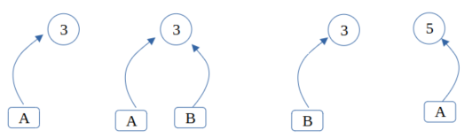
Per “identificador” es fa referència a un identificador d'objecte (no a una adreça de memòria). Aquest identificador es pot obtindre amb la funció id(var).
Prova:
>>> a = 9
>>> b = 10
>>> id(a)
11754152
>>> id(b)
11754184
>>> b = a
>>> id(b)
11754152
En Python es produeix aliasing, és a dir, els objectes tenen individualitat, i múltiples noms poden referir-se al mateix objecte.
a=56 b=56 print(a is b) True
Objectes mutables (llistes, diccionaris, conjunts, definits per l'usuari...)
En Python, les variables són referències a objectes en memòria, no contenidors de dades directament. Quan fas una assignació com:
a = [1, 2, 3] # a és una llista, per tant mutable b = a
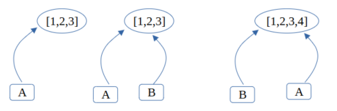
Tant a com b apunten al mateix objecte (una llista en aquest cas). No es crea una còpia de la llista; simplement, ambdues variables fan referència al mateix objecte. Si modifiques la llista a través de b:
b.append(4) # això afegeix un element al final de la llista
La llista a la qual a apunta també es veu modificada, ja que a i b fan referència al mateix objecte en memòria.
Referències i aliasing
La diferència amb els objectes immutables és que quan modifiquem un objecte mutable, no es crea un de nou (si no existeix), com passa amb els immutables. Es modifica l’objecte i es mantenen les referències.
Una altra diferència amb els immutables és que quan assignem una llista a una variable, ES CREA una nova llista (encara que ja n’existisca una amb els mateixos elements).
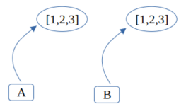
a = [1, 2, 3]
b = [1, 2, 3]
print(a is b)
False
print(a == b)
True
Això no pot passar amb els objectes immutables. En el cas de dos objectes immutables iguals, s’apunta al mateix.
Llistes []
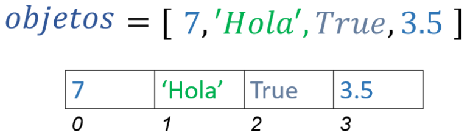
Les llistes són estructures de dades que poden emmagatzemar diversos elements.
- Són ordenades. Suporten indexació i slicing.
- Són Mutables: Es poden modificar després de ser creades.
- Es poden afegir o eliminar elements amb mètodes com
append(),remove(),pop(), etc. - Els elements poden ser mutables o immutables.
- Es poden niar. (un element de la llista, pot ser una altra llista)
- Això implica
- Ordre d'Inserció Fixe: L'ordre en què afegiu els elements a una llista és l'ordre en què es guarden. Aquest ordre és estable i previsible i només canviarà si feu una operació específica per reordenar-la (com ara .sort() o .reverse()).
- Indexació: Podeu accedir a qualsevol element de la llista utilitzant el seu índex numèric (posició), començant per 0. Això és possible precisament perquè la posició de cada element no varia.
- Iteració Previsible: Quan recorreu la llista (amb un bucle for, per exemple), els elements sempre eixiran en la seqüència exacta en què varen ser introduïts
Vegem com manipular llistes amb exemples..
llista1=[] # declara llista buida
fruites = ["poma", "plàtan", "cirera"] # declara llista amb 3 elements
llista1 = list("1234") # fa una llista a partir dels caracters d'un string
llista2 = [1, "Hola", 3.67, [1, 2, 3], None] # pot barrejar tipus diferents
print(fruites) # Imprimeix la llista sencera
print(fruites[0]) # Impremeix el primer element
fruites[0] = "pera" # Canvia el valor del primer element de la llista
del fruites[1] # Esborra el segon element de la llista (es reorganitza la llista)
fruites.append("taronja") # afegeix un element (al final de la llista)
llista1.insert(1, 15) # Inserta en la posició 1, el element 15 (es reorganitza la llista)
llista1.extend([7, 8, 9]) # Afegix els elements de la lista , u per u
fruites.remove("cirera") # Esborra l'element amb valor "cirera", si hi ha més d'u, sols esborra el primer.
# Si no hi cap element, tornarà error => ValueError:
llista1.clear() # equivalent a llista1=[]
print(fruites) print(*fruites) print(*fruites, sep=' -> ') # Tres formes d'imprimir una llista
llista1[0] = 24 llista1[1] = 46
llista1[-1] = 33 llista1[-2] = 57 # Modificació de valors d'una llista
novafruita1 = fruites[2:4] novafruita2 = fruites[:4]
novafruita3 = fruites[2:] # Crea sub-llistes a partir d'una
ultim = llista1.pop() # Extrau l'últim element
altre = llista1.pop(2) # posició 2 ( la primera pos es la 0, l'ultima la -1)
llista_niada = [[1, 2, 3], [4, 5, 6], [7, 8, 9]] # També coneguda com "matriu"
llista3 = llista1 + llista2 # crea nova llista amb els elements de llista1 i de llista2
llista_repetida = llista1 * 3 # crea nova llista amb els elements de llista1 tres vegades
x, y, z = llista # list unpacking
a, *resta = [1, 2, 3, 4] # list unpacking, amb -resta- serà una llista
llista_sense_duplicats = list(set(mevallista))
resultat = all( llista2) # comprova si tots els elements son True (no son False)
resultat = any( llista2) # comprova si algun element es True (no False)
llista1.extend([7, 8, 9]) NO ES IGUAL a llista1.append([7, 8, 9])
=> Explora la diferència ....
Com recorrer una llista
for e in llista: print(e) # e serà un element de la llista en cada iteració
# e pot ser de qualsevol tipus, inclòs llista (llista niada)
for i in range(len(llista)):
print(llista[i]) # i serà un numero de 0 a len(llista) , llista(i) serà l'element
llista[i]=None # A més a més, d'esta forma es pot modificar el valor d'un element !!!
for index, l in enumerate(llista): print(index, l)
# dins dels bucles ens pot ser molt útil saber el tipus de cada element
type(llista1)
<class 'list'>
isinstance(llista1, list)
True
Algunes conversions útils
# De string fer una llista string1='Python' l=list(string1) print(l) # l conté una llista ['P','y','t','h','o','n'] # Per tornar a convertir una llista a string s'utilitzarà join # str no fa la conversió molt bé... string2=''.join(l) print(string2) # Python # O es pot "unir" amb qualsevol lletra string3=','.join(l) print(string3) # P,y,t,h,o,n
Aliasing versus Shallow Copy
# Aliasing: a i b fan referència al mateix objecte a = [1,2] b = a b.append(3) print(a,b) # [1, 2, 3] [1, 2, 3] # Shallow copy: a i c seran objectes diferents a = [1,2] c=a.copy() # també c = list(a) # també c = a[:] c.append(3) print(a,c) # [1, 2] [1, 2, 3]
Python List comprehension o Comprensió de llistes en Python
La comprensió de llistes en Python és una manera concisa i eficient de crear llistes a partir d'iterables com llistes, tuples, rangs, etc.
Sintaxi bàsica:
nova_llista = [expressio for element in iterable if condició]
• expressio: operació o transformació aplicada a cada element
• element: variable que pren els valors de l'iterable
• iterable: objecte iterable (llista, tupla, rang, etc.)
• if condició (opcional): filtra els elements
Exemples de comprensió de llistes
-
Crear una llista de quadrats:
quadrats = [x**2 for x in range(10)] print(quadrats) # Resultat: [0, 1, 4, 9, 16, 25, 36, 49, 64, 81]
-
Filtrar nombres parells:
parells = [x for x in range(10) if x % 2 == 0] print(parells) # Resultat: [0, 2, 4, 6, 8]
-
Convertir paraules a majúscules:
paraules = ["hola", "món", "python"] majuscules = [paraula.upper() for paraula in paraules] print(majuscules) # Resultat: ['HOLA', 'MÓN', 'PYTHON']
Operacions agregades en Python
Operacions agregades i de tractament de col·leccions
Quan treballem amb una col·lecció de dades, com una llista de Python, normalment no volem treballar només amb un element. Sovint necessitem analitzar, buscar, ordenar, filtrar o transformar molts elements alhora.
Per exemple, imaginem que tenim les notes d'un grup d'alumnes:
notes = [7, 4, 9, 6, 4, 8, 5, 10, 3, 4]
Python ens proporciona diferents operacions per treballar amb aquesta col·lecció.
1. Agregar: obtenir informació resumida
Les operacions agregades recorren una col·lecció i obtenen un resultat que resumeix les dades.
print(sum(notes)) # sols si els elements son numeros print(max(notes)) # els elements deuen ser comparables entre ells print(min(notes)) print(len(notes)) #Quants elements té la llista
max, min, sum i len també es poden aplicar a tuples, sets i dicts
2. Buscar
Podem comprovar si un element existeix en una col·lecció: (amb in )
if 10 in notes:
print("La nota 10 existeix")
else:
print("La nota 10 NO existeix")
in també es pot aplicar a tuples, sets i dicts
També podem buscar un element concret: amb index(element)
posicio = notes.index(9) print(posicio)
==> Important: si l'element no existeix, index() provoca un error ValueError:
==> Important: si l'element està més d'una vegada, index() tornarà la posició del primer element
I pot ser que un element estiga més d'una vegada en la llista, i per saber quantes vegades està (amb count(element) )...
quantitat = notes.count(4) # Quantes aparicions té l'element "4" print(quantitat)
També es pot fer servir .index() amb un paràmetre que indique, a partir de quin element buscar..
posicio2 = notes.index(4,2)
3. Ordenar
Podem ordenar els elements (els elements han de ser comparables entre si) amb:
notes.sort() print(notes)
Compte !! Esta funció modifica la llista
# També podem ordenar de major a menor: notes.sort(reverse=True)
Si els elements d'una llista no son del mateix tipus, no es podran ordenar, i si s'intenta, donarà un Error => TypeError
Una altra possibilitat és fer servir la funció sorted(), que crea una nova llista ordenada:
notes_ordenades = sorted(notes)
Esta funció NO modifica la llista, la deixa intacta i crea una altra ordenada
Un tipus d'ordenació sense comparar elements és reverse()
# reverse() modifica la llista, posa l'ultim el primer, el penultim el segon, etc..... llista1.reverse()
Igual que en sort(), en reverse() existeix en Python reversed(), però no torna una llista, torna un iterador, i no es modifica la llista original
4. Filtrar
Filtrar significa seleccionar només els elements que compleixen una determinada condició.
aprovats = [nota for nota in notes if nota >= 5] print(aprovats)
5. Transformar
Transformar significa aplicar una operació a cada element per obtenir una nova col·lecció.
# Per exemple, podem augmentar totes les notes un punt: noves_notes = [nota + 1 for nota in notes] print(noves_notes)
6. Agrupar
Agrupar significa reunir elements segons alguna característica comuna.
# Per exemple, tenim alumnes amb el seu curs:
alumnes = [
("Anna", "DAW"),
("Joan", "ASIX"),
("Pere", "DAW"),
("Maria", "ASIX")
]
Podríem voler obtenir els alumnes de cada cicle:
DAW → Anna, Pere
ASIX → Joan, Maria# Utilitzant un diccionari
grups = {}
for nom, curs in alumnes:
if curs not in grups:
grups[curs] = []
grups[curs].append(nom)
print(grups)
{
"DAW": ["Anna", "Pere"],
"ASIX": ["Joan", "Maria"]
}
Quan treballem amb col·leccions, podem buscar, ordenar, filtrar, transformar, agrupar i agregar les dades per obtenir la informació que necessitem.
Tuples ()
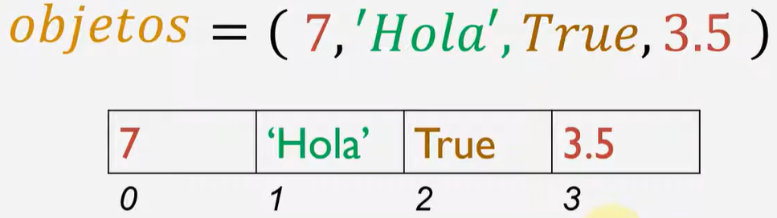
Les tuples són com les llistes però, una vegada declarades, no es poden modificar (són immutables).
- Són ordenades. Suporten indexació i slicing.
- Són Immutables: No es poden modificar després de ser creades.
- No Es poden afegir o eliminar elements.
- Els elements poden ser mutables o immutables.(per exemple, una llista dins d’una tupla Sí que pot canviar).
- Es poden niar.(una tupla pot contenir altres tuples).
mesosAny = ("Gen", "Feb", "Mar", "Abr", "Mai", "Jun", "Jul", "Ago", "Set", "Oct", "Nov", "Des")
mesosAny[1] # accés al segon element
mesosAny[-1] # accés a l'últim element
mesosAny[:2] # slicing
mesosAny[0] = 8 # ERROR, no podem modificar. Tuples son immutables !
tupla1 = () # tupla buida
tupla2 = (6,) # tupla d'un sol element, cal posar la coma!
tupla1 + tupla2 # concatenar tuples
tupla2 * 3 # repetir la tupla 3 vegades
tupla = tuple(llista) # convertir una llista en tupla
nova_llista = list(tupla) # convertir una tupla en llista
tupla = (1, 2, 3)
a, b, c = tupla # desempaquetat, unpacking
tupla = (1, 2, 3, 4, 5)
TUPLA2 = 1, 2, 3, 4 # altra forma de definir
a, *b, c = tupla # a=1, b=[2,3,4], c=5
v = 1 # NO és una tupla
x = (2) # NO és una tupla
y = (1,) # SÍ és una tupla
tupla = 1, 2, ('a', 'b'), 3 # tupla amb elements niats
for t in tupla: print(t) # recorregut de la tupla
type(tupla2) is tuple # comprova si és una tupla
# Una tupla no es pot re-ordenar, perquè és inmutable,
# però es pot crear una altra tupla ordenada
t=(4,7,1,9,2,2)
t2=tuple(sorted(t)) # sorted(t) crea una llista ordenada a partir de t,
# i tuple converteix una llista en una tupla
Quan usar tuples en lloc de llistes?
- Quan les dades no han de canviar (exemple: coordenades, dies de la setmana).
- Quan es busca més eficiència (les tuples consumeixen menys memòria i són més ràpides).
- Quan es necessiten dades hashables (les tuples es poden usar com a claus en diccionaris, les llistes no).
Tuple Comprehension?
En Python no existeix la "tuple comprehension" com a tal.
Si usem parèntesis (()) per intentar fer una comprensió, Python ho interpreta com un generator expression:
tupla = (x**2 for x in range(5)) print(tupla) # Resultat: <generator object at 0x...>
Açò no crea una tupla, sinó un objecte generador. Per convertir-lo en tupla:
tupla = tuple(x**2 for x in range(5)) print(tupla)
Avantatges d’un generador:
- Eficiència de memòria: no carrega tots els elements a memòria.
- Rendiment: útil per a grans volums de dades.
- Simplicitat: codi més net que una funció generadora.
Operacions agregades en tuples
# Operacions agregades: in, len, max, min, sum ,count, index # Igual que en llistes sorted(tupla) # retorna una llista ordenada aprovats = tuple (nota for nota in notes if nota >= 5 ) # Filtrar tupla = tuple(x**2 for x in range(5)) # Transformar
Conjunts -sets- {}
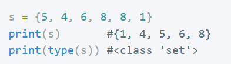
Característiques principals
- Elements únics: Un conjunt no pot contindre duplicats.
- No ordenats: Els elements no tenen un ordre específic.
- Mutables: Es poden afegir o eliminar elements.
- Els elements han de ser immutables: podem afegir o llevar, però no modificar un element concret.
Ordenats o No ordenats: en Python els conjunts (sets) no són ordenats. Això vol dir que els elements d'un conjunt no tenen una posició específica o un ordre fixe. Quan s'imprimeix un conjunt o s'itera sobre ell, l'ordre dels elements pot ser diferent del que es va utilitzar per crear-lo i, de fet, pot canviar entre diferents execucions del programa o amb el temps.
🔢 Què passa amb els Nombres?Quan Python mostra un conjunt de nombres, pot semblar que està ordenat de vegades, però això és una coincidència a causa de com es calcula el hash i com s'organitzen els nombres a la memòria, no és una propietat garantida del tipus de dades set
Exemples d’ús
conjunt_buit={} # No es construeix així un conjunt. Açò crea un dict
conjunt_buit = set() # Així SI
conjunt = {1, 2, 2, 3} # Així també
print(conjunt) # Eixida: {1, 2, 3} (elimina duplicats)
conjunt = set([1, 2, 3, 3]) # convertir una llista en conjunt
# (elimina duplicats) -> {1, 2, 3}
conjunt = set( (1, 2, 3, 3) ) # convertir una tupla en conjunt
conjunt.add(4) # afegir un element ( el nombre 4)
conjunt.add( [5, 6]) # afegir UN element ( la llista [5, 6] ) -> {1,2,3,4, [5,6] }
conjunt.update([3,6,7,8]) # afegir elements d'una llista (u per u)
# ( el nombre 3 no s'afegix perque ja existeix en el conjunt)
conjunt.remove(2) # elimina el nombre 2, dona error si no existeix
conjunt.discard(4) # elimina el nombre 4, no dona error si no existeix
conjunt.pop() # elimina i retorna un element aleatori. Si c es buit dona Error
conjunt.clear() # buida el conjunt
type(conjunt) is set # comprova si és un conjunt (identitat)
a = frozenset([1, 2, 3]) # conjunt immutable
conjunt = {1, 2.5, "hola", (1, 2), frozenset([3, 4])}
# Recorrer un conjunt
for element in conjunt:
print(element)
update() també funciona amb altres col·leccions (elements de les col·leccions)
conjunt.update((60, 70)) # tupla
conjunt.update({80, 90}) # conjunt
conjunt.update("abc") # cadena
En el cas d'una string, s'afegeixen els caràcters individualment.
Operacions entre conjunts
print(a.issubset(b)) # a està contingut en b print(a.issuperset(b)) # a conté tots els elements de b print(a.isdisjoint(b)) # a i b no tenen cap element en comú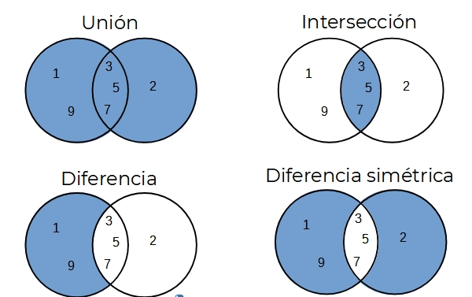
# Unió print(s1 | s2) print(s1.union(s2)) # No es modifica el conjunt original # Intersecció print(s1 & s2) print(s1.intersection(s2)) # Diferència print(s1 - s2) print(s1.difference(s2)) # Diferència simètrica print(s1 ^ s2) print(s1.symmetric_difference(s2))
Mètodes destructius (modifiquen el conjunt original):
conjunt.update(iterable) # Afegix elements de l'iterable al conjunt
# Equival a conjunt |= set(iterable)
conjunt.intersection_update(iterable)
conjunt.difference_update(iterable)
conjunt.symmetric_difference_update(iterable)
Set Comprehension
És una forma compacta de crear conjunts.
nou_conjunt = {expressio for element in iterable if condició}
# Exemple:
parells = {x for x in range(10) if x % 2 == 0}
Operacions agregades en conjunts
# Operacions agregades: in, len, max, min, sum , # Igual que en llistes
Les funcions count() , index() no tenen sentit en conjunts
No es poden ordenar conjunts ( no ordenació )
c1 = { nota for nota in notes if nota >= 5 } # Filtrar
c2 = { x**2 for x in range(5) } # Transformar
Diccionaris { , }
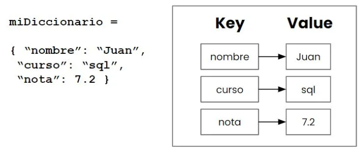
Els diccionaris emmagatzemen parells clau-valor.
Característiques principals
- Mutables
- No permeten claus duplicades. Si s’afegeix una clau repetida, el seu valor serà sobreescrit.
- Les claus han de ser immutables. Poden ser
str,int,tuple, però nolistodict. - Mantenen l’ordre d’inserció (des de Python 3.7).
Exemples d’ús
dic = {} # Diccionari buit
persona = {"nom": "Carlos", "edat": 30, "ciutat": "Madrid"}
print(persona["nom"]) # Accedeix al valor d’una clau. Imprimeix 'Carlos'
dic["nova_clau"] = "nou_valor" # Afegir una nova clau
dic["clau1"] = "valor_actualitzat" # Modificar el valor d'una clau existent
valor = dic["clau1"] # Accedir a un valor (error si no existeix)
valor = dic.get("clau1", "per defecte") # Evita errors si no existeix
del dic["clau1"] # Eliminar una clau
valor = dic.pop("clau2", None) # Elimina i retorna el valor, o None
dic.clear() # Buida el diccionari
if "clau1" in dic:
print("Clau trobada")
# Iteracions
for clau in dic:
print(clau)
for valor in dic.values():
print(valor)
for clau, valor in dic.items():
print(clau, valor)
tamany = len(dic) # Nombre d’elements
nou_dic = dic.copy() # Còpia superficial
dic.update({"clau3": "valor3", "clau4": "valor4"}) # Afegir/modificar diverses claus
claus = dic.keys() # objecte dict_keys
valors = dic.values() # objecte dict_values
items = dic.items() # objecte dict_items
type(dic) is dict # Comprova si és un diccionari
dict.update(dict2) # Fundeix dos diccionaris. Modifica dict. Retorna None
d.update(y=2, z=3) # Passant més d'un parell, com arguments
d.update([("y", 2), ("z", 3)]) # Passant tuples, com arguments
dic1 | dic2 # (Python 3.9+) Fundeix dos diccionaris. Prioritza dic2. Retorna diccionari.
# No modifica ni dict1 ni dict2
dic1 |= dic2 # Fusiona i actualitza dic1. Equival a dic1 = dic1 | dic2
Claus i valors mutables
Les claus han de ser immutables, però els valors poden ser de qualsevol tipus, fins i tot llistes o altres diccionaris.
dic = {(1, 2): "punt", (3, 4): "altre punt"}
print(dic[(1, 2)]) # "punt"
Comprensió de Diccionaris (Dictionary Comprehension)
Permet construir diccionaris de manera compacta a partir d’un iterable:
numeros = [1, 2, 3, 4]
quadrats = {n: n**2 for n in numeros}
print(quadrats) # {1: 1, 2: 4, 3: 9, 4: 16}
Operacions agregades en diccionaris
# Operacions agregades: in, len, max, min, sum
# En diccionaris cal tenir en compte que moltes d'aquestes operacions
# treballen per defecte sobre les claus. (max, min, sum)
# Si el que vols és treballar amb els valors, has d'utilitzar .values()
edats = {"Anna": 20, "Pere": 25, "Joan": 18 }
print(max(edats)) # "Pere"
print(max(edats.values())) # 25
print(min(edats.values())) # 18
print(sum(edats.values())) # 63
"Pere" in edats # True → busca entre les claus
25 in edats # False → NO busca entre els valors
25 in edats.values() # True → busca entre els valors
Les funcions count() , index() no son mètodes de diccionaris
# Ordenar. No es pot ordenar un diccionari, pero si els valors o les claus.
# Filtrar per valor
aprovats = { nom: nota for nom, nota in notes.items() if nota >= 5 }
# Filtrar per clau
resultat = { nom: nota for nom, nota in notes.items() if nom.startswith("A") }
# Amb dict comprehension ==> # Transformar
Funcions lambda (funcions anònimes)
Una expressió lambda en Python permet crear funcions petites i anònimes (sense nom). Són útils per definir comportaments ràpids o temporals, especialment dins d’estructures com diccionaris, funcions d’ordre superior (map, filter, sorted, etc.) o comprensions.
Sintaxi
lambda arguments: expressió
Exemple bàsic:
f = lambda x: x * 2 print(f(4)) # Imprimeix 8
Exemple amb diccionari de funcions
operacions = {
"suma": lambda x, y: x + y,
"resta": lambda x, y: x - y
}
print(operacions["suma"](10, 5)) # Imprimeix 15
print(operacions["resta"](10, 5)) # Imprimeix 5
En este cas, operacions és un diccionari que guarda funcions lambda com a valors. Cada clau representa una operació aritmètica, i pots executar la funció cridant-la amb els arguments corresponents.
Treballar amb Arrays en Python
Què és un array: També se sol dir vector i és un tipus de dades estructurades, relacionat i homogèni,
es a dir, totes les dades del vector seran del mateix tipus
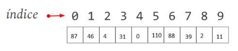
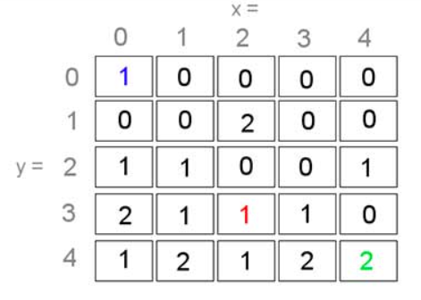
Si els elemnts d'un vector, son vectors, estem parlant d'un vector bidimensional, o matriu
De igual manera es pot definir un cub, com a un vector de 3 dimensions, o un tesseracte o hipercub com un vector de 4 dimensions
En Python, es poden gestionar arrays mitjançant llistes o utilitzant el mòdul NumPy. Aquesta és una biblioteca externa que proporciona funcionalitats específiques per a computació numèrica.
Què és NumPy?
NumPy (Numerical Python) és una de les biblioteques més fonamentals i populars de Python per treballar amb computació científica i manipulació de dades numèriques.
És àmpliament utilitzada en àrees com:
- Anàlisi de dades
- Intel·ligència artificial
- Aprenentatge automàtic (machine learning)
- Processament d’imatges
- I molt més
NumPy proporciona:
- Arrays multidimensionals per treballar amb dades de manera més eficient que amb llistes de Python.
- Funcions matemàtiques optimitzades per fer operacions ràpides i vectoritzades.
- Eines per manipulació de dades, àlgebra lineal, transformades de Fourier, generació de nombres aleatoris, etc.
Instal·lació
Si no tens instal·lat NumPy, pots fer-ho amb la següent comanda:
$ pip3 install numpyCaracterístiques principals de NumPy
Arrays
El tipus de dades principal de NumPy és l'ndarray (array N-dimensional). Aquests són més ràpids i ocupen menys memòria que les llistes de Python.
Exemple bàsic:
import numpy as np
# Crear un array unidimensional
arreglo = np.array([1, 2, 3, 4])
print("Array:", arreglo)
print(arreglo[2]) # Un element
arreglo[2]=8 # Modificar un element
# Crear un array bidimensional (matriu)
matriu = np.array([[1, 2, 3], [4, 5, 6]]) # Dos files , tres columnes. files 0,1 columnes 0,1,2
print("Matriu:\n", matriu)
print("Element 1,2: ", matriu[1,2]) # ==> 6
matriu[1,2]=99 # Canviar un element
print("Matriu:\n", matriu)Explicació dels exemples:
np.array([...]): crea un array de NumPy a partir d'una llista de Python.- Els arrays poden ser d'una sola dimensió (com una llista) o multidimensionals (com una matriu o tensor).
- Les operacions amb arrays són molt més eficients que amb llistes, especialment en càlculs matemàtics o estadístics.
Vectorització amb NumPy
NumPy permet realitzar operacions matemàtiques sobre tots els elements d’un array d’una sola vegada, sense necessitat d’utilitzar bucles (loops).
Exemple:
# Operacions matemàtiques amb arrays
a = np.array([1, 2, 3])
b = np.array([4, 5, 6])
print("Suma:", a + b) # [5 7 9]
print("Producte escalar:", a * 2) # [2 4 6]Estalvi de memòria
NumPy emmagatzema les dades en un tipus homogeni (tots els elements són del mateix tipus), la qual cosa fa que siga més eficient en ús de memòria que les llistes tradicionals de Python.
Exemple:
import sys
llista = range(1000)
print("Mida de la llista:", sys.getsizeof(1) * len(llista))
arrel = np.arange(1000)
print("Mida de l'array NumPy:", arrel.nbytes)Funcions útils
NumPy inclou moltes funcions predefinides per a càlculs matemàtics:
- Aritmètiques:
np.sum,np.mean,np.median,np.std,np.var - Operacions lògiques:
np.all,np.any - Generació de nombres aleatoris:
np.random.rand,np.random.randint - Àlgebra lineal:
np.dot,np.linalg.inv,np.linalg.eig
Exemple de càlculs estadístics:
# Estadístiques bàsiques
dades = np.array([10, 20, 30, 40])
print("Mitjana:", np.mean(dades))
print("Desviació estàndard:", np.std(dades))Creació d'arrays especialitzats
NumPy facilita la creació d'arrays amb valors específics de forma ràpida i senzilla.
Exemples:
# Array de zeros
zeros = np.zeros((2, 3)) # 2 files, 3 columnes
print("Zeros:\n", zeros)
# Array d'unos
unos = np.ones((3, 2))
print("Unos:\n", unos)
# Array amb valors en un rang
rang = np.arange(0, 10, 2) # Inici, fi, pas
print("Rang:", rang)
# Array amb valors espaiats uniformement
espaiats = np.linspace(0, 1, 5) # Inici, fi, quantitat
print("Espaiats uniformement:", espaiats)Nota: Aquestes funcions són molt útils per preparar dades per a experiments, simulacions o per crear estructures numèriques base de manera ràpida.
Indexació i slicing avançats
Amb NumPy pots accedir i modificar elements dels arrays utilitzant índexs o fins i tot condicions.
arrel = np.array([10, 20, 30, 40, 50])
# Accés per índex
print("Element en l'índex 2:", arrel[2]) # 30
# Slicing (subarray)
print("Subarray:", arrel[1:4]) # [20 30 40]
# Condicionals
print("Elements majors que 25:", arrel[arrel > 25]) # [30 40 50]Operacions amb matrius
NumPy és molt eficient per a fer càlculs amb matrius, com el producte punt o la transposició.
A = np.array([[1, 2], [3, 4]])
B = np.array([[5, 6], [7, 8]])
# Producte punt (matriu A · matriu B)
print("Producte punt:\n", np.dot(A, B))
# Transposició de matriu A
print("Transposada de A:\n", A.T)Nota: El mètode np.dot calcula el producte matricial clàssic, mentre que A.T retorna la transposada (intercanviant files per columnes).
Generació de nombres aleatoris
NumPy ofereix diverses funcions per generar valors aleatoris de manera senzilla:
# Nombre aleatori entre 0 i 1
aleatori = np.random.rand()
print("Nombre aleatori:", aleatori)
# Matriu aleatòria d'enters
aleatoris = np.random.randint(1, 10, size=(3, 3))
print("Matriu aleatòria:\n", aleatoris)Aquestes funcions són útils per simular dades, inicialitzar variables o fer proves estadístiques.
Per què utilitzar NumPy?
NumPy és una biblioteca fonamental en Python per al càlcul numèric i l'anàlisi de dades. Els principals motius per a utilitzar-la són:
- Velocitat: NumPy pot ser fins a 50 vegades més ràpid que les llistes normals de Python per a operacions numèriques gràcies al seu codi optimitzat en C.
- Optimització de memòria: Els arrays de NumPy utilitzen menys memòria que les estructures estàndard de Python.
- Facilitat d’ús: Inclou moltes funcions matemàtiques, estadístiques i d’àlgebra lineal que es poden utilitzar directament.
- Interoperabilitat: Funciona perfectament amb altres biblioteques com Pandas, Matplotlib, Scikit-learn, entre altres.
Dates en Python
Python inclou de manera nativa eines per al tractament de dates i hores mitjançant el mòdul estàndard datetime. Aquest mòdul ve integrat en Python i no necessites instal·lar cap llibreria addicional per utilitzar-lo.
Importar el mòdul datetime
# el mòdul
import datetime
# o funcions concretes
from datetime import date, datetime, timedelta, date Obtenir la data i hora actuals
Data i hora actuals:
ara = datetime.now()
print("Data i hora actual:", ara)print(ara.hour) print(ara.minute) print(ara.second)
Només la data actual:
hui = date.today()
print("Data actual:", hui)print(hui.year) # any print(hui.month) # mes print(hui.day) # dia
Crear una data o hora específica
Crear una data específica:
mi_fecha = datetime(2025, 1, 28) # Any, mes, dia
print("Data específica:", mi_fecha)Crear una data i hora específica:
mi_fecha_hora = datetime(2025, 1, 28, 14, 30, 0) # Any, mes, dia, hora, minut, segon
print("Data i hora específica:", mi_fecha_hora)Format de dates (strftime)
Pots convertir una data o hora en un format específic com a text:
format = ara.strftime("%d/%m/%Y %H:%M:%S")
print("Format personalitzat:", format)Exemples de codis de format:
%Y- Any complet (2025)%m- Mes en número (01)%d- Dia (28)%H- Hora en format de 24 hores%I- Hora en format de 12 hores%M- Minut%S- Segon%p- AM o PM
Convertir i Operar amb Dates en Python
Convertir text en data (strptime)
Pots convertir una cadena de text en un objecte datetime:
texto = "28/01/2025 14:30:00"
fecha_convertida = datetime.strptime(texto, "%d/%m/%Y %H:%M:%S")
print("Text convertit a data:", fecha_convertida)Operacions amb dates
Aquí tens algunes operacions que pots realitzar amb dates:
1. Afegir o restar temps amb timedelta:
Afegir 10 dies a la data actual:
nueva_fecha = ahora + timedelta(days=10)
print("Data amb 10 dies més:", nueva_fecha)Restar 5 hores:
nueva_hora = ahora - timedelta(hours=5)
print("Data amb 5 hores menys:", nueva_hora)** Pensa en timedelta com una quantitat de temps, no com una data.
Paràmetres en timedelta(days=0, seconds=0, microseconds=0, milliseconds=0, minutes=0, hours=0, weeks=0 )
2. Calcular la diferència entre dues dates: ->timedelta
fecha1 = datetime(2025, 1, 28)
fecha2 = datetime(2025, 2, 5)
diferencia = fecha2 - fecha1
print("Dies de diferència:", diferencia.days)Comparar dates
Pots utilitzar operadors de comparació com <, >, == per comparar objectes de data i hora:
if fecha1 < fecha2:
print("Fecha1 és anterior a Fecha2")
else:
print("Fecha1 és posterior o igual a Fecha2")Altres Mòduls Relacionats amb Dates en Python
Mòdul time
El mòdul time s'utilitza per treballar amb el temps del sistema i realitzar operacions com mesurar intervals o fer pauses.
Característiques principals:
- Gestió de timestamps (segons des de l'Epoch, 1 de gener de 1970).
- Realitzar pauses en l'execució del programa.
Exemple bàsic:
import time
# Pausar l'execució per 2 segons
time.sleep(2)
# Obtenir el timestamp actual
timestamp = time.time()
print("Timestamp actual:", timestamp)Un timestamp és un número que representa un moment exacte en el temps. Concretament, en Python (i en molts sistemes): és el nombre de segons que han passat des del 1 de gener de 1970 a les 00:00:00 (UTC) (això s’anomena Unix Epoch).
Convertir timestamp a data llegible
import time from datetime import datetime timestamp = time.time() data = datetime.fromtimestamp(timestamp) print(data)
Convertir data a timestamp
dt = datetime(2026, 2, 10, 12, 0) timestamp = dt.timestamp() print(timestamp)
Mòdul calendar
Aquest mòdul és útil per treballar amb calendaris i verificar propietats de dates (com dies de la setmana, anys bessis, etc.).
Característiques principals:
- Generar calendaris en text o HTML.
- Verificar si un any és bisiest.
- Obtenir el primer dia de la setmana i el nombre de dies en un mes.
Exemple bàsic:
import calendar
# Verificar si un any és bisiest
print("¿2024 és bisiest?", calendar.isleap(2024))
# Obtenir el calendari de gener 2025
print(calendar.month(2025, 1))Mòdul zoneinfo (Python 3.9+)
Aquest mòdul permet gestionar zones horàries de manera més senzilla i eficient.
Característiques principals:
- Treballar amb zones horàries específiques.
- Convertir temps entre zones horàries.
Exemple bàsic:
from datetime import datetime
from zoneinfo import ZoneInfo
# Definir zones horàries
utc = datetime.now(ZoneInfo("UTC"))
madrid = datetime.now(ZoneInfo("Europe/Madrid"))
print("Hora UTC:", utc)
print("Hora Madrid:", madrid)Llibreries externes (opcionals)
Tot i que Python inclou eines robustes per gestionar dates, de vegades pots necessitar llibretes externes per a casos més complexos. Les més populars són:
- dateutil
- arrow
Funcions Avançades en Python
- *args i **kwargs
- Funcions Lambda
- Funcions d'ordre superior
- Decoradors
- Generadors
Ús de *args i **kwargs
*args permet passar un nombre variable d’arguments posicionals a una funció. S’emmagatzemen com una tupla.
def sumar(*args):
return sum(args)
print(sumar(1, 2, 3, 4)) # Output: 10 **kwargs permet passar arguments amb clau i valor (com un diccionari) sense definir-los prèviament.
def mostrar_info(**kwargs):
for clau, valor in kwargs.items():
print(f"{clau}: {valor}")
mostrar_info(nom="Anna", edat=30, ciutat="València") Diferència:
*args: tupla d’arguments posicionals.**kwargs: diccionari d’arguments amb nom.
Exemple combinat:
def exemple(*args, **kwargs):
print("Args:", args)
print("Kwargs:", kwargs)
exemple(1, 2, 3, nom="Joan", edat=25) Funcions Lambda
Les funcions lambda són funcions anònimes d’una sola línia, útils per a operacions curtes.
suma = lambda x, y: x + y
print(suma(3, 5)) # 8
cuadrat = lambda x: x ** 2
print(cuadrat(4)) # 16
es_par = lambda x: x % 2 == 0
print(es_par(10)) # True Funcions d'ordre superior - map, filter
Una funció d’ordre superior és una funció que: rep una funció com a argument, i/o retorna una funció.
reduce també és d'ordre superior, pero no és built-in
map
Què és map: És una funció que servix per aplicar una (mateixa) operació
a cada element d’un iterable (com una llista, tupla, etc.) i retornar els resultats.
map(funció, iterable)valors = ["1", "2", "3"]
numeros = map(int, valors) # La funció pot set també "user-defined"
print(numeros)
<map object at 0x00000198FA7D5F00> print(list(numeros))
[1, 2, 3] - 📌 Detalls importants
mapno crea una llista directament, crea un iterador- cal usar list() si vols veure els valors
filter
filter és una funció que servix per seleccionar elements d’un iterable segons una condició.
A diferència de map, que transforma valors, filter decideix quins es queden.
nums = [1, 2, 3, 4, 5, 6]
parells = filter(lambda x: x % 2 == 0, nums)
list(parells) Com map, retorna un iterador, no una llista
Exemples de lambda amb funcions d’ordre superior
# map numeros = [1, 2, 3, 4] dobles = list(map(lambda x: x * 2, numeros)) # filter pares = list(filter(lambda x: x % 2 == 0, numeros)) # sorted amb clau paraules = ["poma", "plàtan", "kiwi"] ordenades = sorted(paraules, key=lambda x: len(x))
Decoradors en Python
Un decorador és una funció que rep una altra funció, l’amplia amb funcionalitat addicional, i retorna una nova funció.
def mi_decorador(func):
def nova_funcio():
print("Abans de cridar la funció")
func()
print("Després de cridar la funció")
return nova_funcio
@mi_decorador
def salutacio():
print("Hola, món!")
salutacio()
Decoradors amb paràmetres
def decorador_amb_args(func):
def embolcall(*args, **kwargs):
print(f"Cridant {func.__name__} amb {args} {kwargs}")
return func(*args, **kwargs)
return embolcall
@decorador_amb_args
def suma(a, b):
return a + b
Decorador amb paràmetres personalitzats
def repetidor(n):
def decorador(func):
def embolcall(*args, **kwargs):
for _ in range(n):
func(*args, **kwargs)
return embolcall
return decorador
@repetidor(3)
def hola():
print("Hola!")
hola()
Decoradors predefinits
@staticmethod: mètode estàtic d’una classe.@classmethod: accedeix a la classe com a primer argument.@property: converteix un mètode en propietat.
class Persona:
def __init__(self, nom):
self._nom = nom
@property
def nom(self):
return self._nom
p = Persona("Carles")
print(p.nom) # Sense parèntesis
Generadors
Els generadors són una manera més senzilla i eficient de crear iterables en Python. S'utilitzen funcions amb la paraula clau yield en lloc de return.
Quan una funció conté yield, es converteix en un generador i pot conservar l'estat entre iteracions.
Exemple de generador:
def comptador(inici, fi):
while inici <= fi:
yield inici
inici += 1
for numero in comptador(1, 5):
print(numero)
Este codi té el mateix comportament que la classe Comptador de l'exemple anterior, però és molt més curt i fàcil de llegir.
Avantatges dels generadors:
- Menys codi i més llegibilitat.
- No cal gestionar
__iter__ni__next__. - Estalvi de memòria, ja que els valors es generen sobre la marxa (lazy evaluation).
El Garbage Collector (GC) de Python
El Garbage Collector és el mecanisme encarregat d'administrar la memòria automàticament en Python. Elimina els objectes que ja no s’utilitzen, alliberant espai i evitant fugues de memòria.
Exemple conceptual
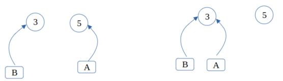
>>> b = 3
>>> a = 5
>>> a = b
Quan a = 5, l’objecte 5 té una referència. Però després a = b, a passa a referenciar 3. Com ningú apunta ja a 5, queda sense ús i el GC el pot eliminar.
Funcionament intern
- Conteig de referències: cada objecte té un comptador que indica quantes referències l’apunten. Si arriba a zero, es pot eliminar automàticament.
- Recol·lecció de brossa generacional: els objectes s’organitzen en generacions (0, 1 i 2). Els nous comencen en la generació 0, i si “sobreviuen” diverses neteges, passen a generacions superiors.
Python fa neteges més freqüents en la generació 0 que en les superiors, perquè és més probable que els objectes nous siguen de curta duració.
Control manual amb el mòdul gc
Encara que el GC funciona automàticament, es pot controlar manualment amb el mòdul gc:
import gc gc.collect() # Força una execució del garbage collector gc.get_stats() # Mostra estadístiques sobre el GC
Expressions regulars
Les expressions regulars (també conegudes com a regex) són patrons que permeten buscar, comprovar i manipular text seguint unes regles determinades.
Per exemple, podem utilitzar una expressió regular per comprovar si una cadena té el format d'un correu electrònic, per trobar tots els números que apareixen en un text o per substituir determinats fragments.
En Python, les expressions regulars es treballen principalment mitjançant el mòdul re.
import re
Patrons i coincidències
Una expressió regular està formada per un patró. El patró descriu què volem buscar dins d'un text.
Per exemple, el patró gat busca exactament la seqüència de caràcters gat.
import re
text = "El gat està dormint."
resultat = re.search("gat", text)
print(resultat)
<re.Match object; span=(3, 6), match='gat'></re.Match>
Si el patró es troba dins del text, re.search() retorna un objecte de tipus Match. Si no el troba, retorna None.
import re
text = "El gat està dormint."
resultat = re.search("gos", text)
print(resultat)
# None
El mètode search()
re.search() busca el patró en qualsevol posició de la cadena i retorna la primera coincidència que troba.
import re
text = "Python és un llenguatge de programació."
resultat = re.search("Python", text)
if resultat:
print("S'ha trobat el text")
else:
print("No s'ha trobat")
Podem obtindre el text que ha coincidit mitjançant el mètode group().
import re text = "El meu número és 12345." resultat = re.search(r"\d+", text) if resultat: print(resultat.group()) # 12345
La r davant de la cadena indica que estem utilitzant una raw string. És una forma habitual d'escriure patrons d'expressions regulars, especialment quan contenen la barra invertida \.
Classes de caràcters
Les expressions regulars disposen de símbols especials per representar diferents tipus de caràcters.
| Patró | Significat | Exemple |
|---|---|---|
\d | Qualsevol dígit | 0, 1, 2, ... |
\D | Qualsevol caràcter que no siga un dígit | a, X, !, ... |
\w | Caràcter de paraula | a, B, 7, _ |
\W | Caràcter que no siga de paraula | !, ?, espai... |
\s | Espai en blanc | espai, tabulador, salt de línia... |
\S | Caràcter que no siga un espai en blanc | a, 7, !... |
Exemple amb dígits
El patró \d permet trobar un dígit. Si volem trobar un o més dígits consecutius, podem utilitzar \d+.
import re text = "L'edat de Joan és 25 anys." resultat = re.search(r"\d+", text) print(resultat.group()) # 25
Quantificadors
Els quantificadors indiquen quantes vegades pot aparéixer un element del patró.
| Quantificador | Significat |
|---|---|
* | Zero o més vegades |
+ | Una o més vegades |
? | Zero o una vegada |
{n} | Exactament n vegades |
{n,m} | Entre n i m vegades |
Exemple
El patró \d{3} busca exactament tres dígits consecutius.
import re
text = "Codi: 123"
resultat = re.search(r"\d{3}", text)
print(resultat.group())
# 123
En canvi, \d+ busca una seqüència formada per un o més dígits.
import re text = "Productes: 12, 35 i 108" resultats = re.findall(r"\d+", text) print(resultats) # ['12', '35', '108']
El mètode findall()
Quan volem trobar totes les coincidències d'un patró, podem utilitzar re.findall().
import re text = "Els números són 12, 25 i 48." numeros = re.findall(r"\d+", text) print(numeros) # ['12', '25', '48']
La diferència principal amb search() és:
search()busca la primera coincidència.findall()retorna totes les coincidències.
Conjunts de caràcters
Amb els claudàtors [] podem indicar un conjunt de caràcters.
import re text = "gat gos git" resultats = re.findall(r"g[aeiou]t", text) print(resultats) # ['gat', 'git']
El patró [aeiou] indica que en aquesta posició pot aparéixer qualsevol de les cinc vocals.
També podem utilitzar un rang de caràcters:
[0-9] # qualsevol dígit [a-z] # qualsevol lletra minúscula [A-Z] # qualsevol lletra majúscula
Inici i final d'una cadena
Alguns símbols permeten indicar la posició dins de la cadena.
| Símbol | Significat |
|---|---|
^ | Inici de la cadena |
$ | Final de la cadena |
Per exemple, el patró següent comprova que la cadena comence per Python:
import re
text = "Python és fàcil d'aprendre."
if re.search(r"^Python", text):
print("La cadena comença per Python")
El mètode match()
re.match() comprova la coincidència des de l'inici de la cadena.
import re
text = "Python és un llenguatge."
resultat = re.match(r"Python", text)
if resultat:
print("Coincideix")
else:
print("No coincideix")
Per això, match() i search() no són exactament iguals:
match()només comprova des del principi.search()pot trobar la coincidència en qualsevol posició.
El mètode fullmatch()
Quan volem comprovar que tota la cadena compleix un patró, podem utilitzar re.fullmatch().
Per exemple, per comprovar que una cadena conté exactament quatre dígits:
import re
text = "1234"
resultat = re.fullmatch(r"\d{4}", text)
if resultat:
print("Format correcte")
else:
print("Format incorrecte")
A diferència de search(), no n'hi ha prou que una part de la cadena coincidisca. Ha de coincidir tota la cadena.
Substituir text amb sub()
Les expressions regulars també permeten substituir fragments de text.
import re text = "El meu telèfon és 612345678." nou_text = re.sub(r"\d+", "XXXXXXXXX", text) print(nou_text) # El meu telèfon és XXXXXXXXX.
re.sub() rep principalment tres elements:
- El patró que volem buscar.
- El text de substitució.
- El text original.
Grups
Els parèntesis () permeten crear grups dins d'una expressió regular.
Per exemple, podem separar el nom d'usuari i el domini d'un correu electrònic:
import re text = "[usuari@example.com](mailto:usuari@example.com)" resultat = re.search(r"(\w+)@(\w+.\w+)", text) if resultat: print(resultat.group(1)) print(resultat.group(2)) # usuari # example.com
Els grups són especialment útils quan, a més de trobar una coincidència, volem extraure diferents parts de la informació.
Exemple pràctic: comprovar un DNI
Podem utilitzar una expressió regular per comprovar el format d'un DNI espanyol: huit dígits seguits d'una lletra.
import re
dni = "12345678Z"
patro = r"\d{8}[A-Za-z]"
if re.fullmatch(patro, dni):
print("Format de DNI correcte")
else:
print("Format de DNI incorrecte")
Important: aquesta expressió regular només comprova el format. No comprova que la lletra siga la que correspon matemàticament als huit dígits del DNI.
Expressions regulars: resum
| Element | Funció |
|---|---|
\d | Un dígit |
\w | Caràcter de paraula |
\s | Espai en blanc |
+ | Una o més vegades |
* | Zero o més vegades |
? | Zero o una vegada |
{n} | Exactament n vegades |
[] | Conjunt de caràcters |
^ | Inici de la cadena |
$ | Final de la cadena |
() | Grup |
Una expressió regular és un patró que descriu una determinada forma de text. En Python, el mòdul re ens permet buscar, comprovar, extraure i substituir informació utilitzant aquests patrons.
Es poden fer comprovacions de patrons senzills sense re , utilitzant els mètodes normals de les cadenes.
if text.isdigit():
if text.isalpha():
if text.isalnum():
text.startswith("http")
text.endswith(".com")
text.lower()
text.upper()
text.find("Python")
text.replace("gat", "gos")
==>Però això no són expressions regulars ....
Per exemple, imagina que volem comprovar que una cadena té aquest format:
AB-1234-CDSense re ho podríem fer, però necessitaríem bastant codi:
text = "AB-1234-CD"
correcte = (
len(text) == 10 and
text[0:2].isalpha() and
text[2] == "-" and
text[3:7].isdigit() and
text[7] == "-" and
text[8:10].isalpha()
)
print(correcte)
Amb una expressió regular:
import re
text = "AB-1234-CD"
if re.fullmatch(r"[A-Za-z]{2}-\d{4}-[A-Za-z]{2}", text):
print("Format correcte")
Llenguatges d’intercanvi de dades
El format de dades (llenguatge d’intercanvi de dades) i el llenguatge de programació són coses diferents. Python no "és" un llenguatge JSON o CSV; Python disposa de biblioteques que permeten llegir, crear, modificar i convertir dades en aquests formats.
Python pot manejar molts altres formats d'intercanvi de dades, a més de JSON i CSV
Els més habituals...
| Format | Extensió | Ús habitual | Python (llibreria) |
|---|---|---|---|
| JSON | .json |
APIs, configuracions, intercanvi de dades | json |
| CSV | .csv |
Dades tabulars | csv |
| XML | .xml |
APIs, documents estructurats, sistemes antics | xml.etree.ElementTree |
| YAML | .yaml, .yml |
Configuració, DevOps, Kubernetes | PyYAML |
| TOML | .toml |
Configuració de projectes Python | tomllib |
| INI | .ini |
Fitxers de configuració | configparser |
| Excel | .xlsx |
Fulls de càlcul i dades tabulars | openpyxl, pandas |
| HTML | .html |
Documents web | html, BeautifulSoup |
| SQLite | .db, .sqlite |
Bases de dades locals | sqlite3 |
| Pickle | .pkl |
Serialització d'objectes Python | pickle |
Format JSON
JSON (JavaScript Object Notation) és un format de text utilitzat per representar i intercanviar dades estructurades. És molt habitual en APIs, aplicacions web i fitxers de configuració.
Estructura bàsica
Un objecte JSON utilitza {} i conté parelles clau: valor. Les claus s'escriuen entre cometes dobles.
{
"nom": "Anna",
"edat": 20,
"actiu": true
}
(Açò recorda MOLT a un diccionari de Python !! ) 👀
Pot contindre arrays ...
{
"nom": "Anna",
"edat":20,
"aficions": ["música", "cinema", "esport"] }
Pot contindre altres objectes (json)
{
"nom": "Anna",
"edat": 20,
"adreça": { "carrer": "Major",
"numero": 25,
"ciutat": "València" }
}
Pot contindre arrays d'objectes...
{ "alumnes": [ { "nom": "Anna", "edat": 20 }, { "nom": "Joan", "edat": 21 } ] }
I podem fer recursivament, combinacions de : objectes, llistes i tipus de valors
Tipus de dades
| JSON | Python |
|---|---|
"Anna" | str |
20 | int |
true / false | True / False |
null | None |
{ } | dict |
[ ] | list |
JSON i Python
Python proporciona el mòdul json per convertir dades entre Python i JSON.
import json
dades = {
"nom": "Anna",
"edat": 20
}
Python → cadena JSON
text = json.dumps(dades)
cadena JSON → Python
dades2 = json.loads(text)
Treballar amb fitxers
Guardar en un fitxer
with open("dades.json", "w", encoding="utf-8") as f:
json.dump(dades, f, indent=4)
Llegir un fitxer
with open("dades.json", "r", encoding="utf-8") as f:
dades = json.load(f)
Funcions principals
| Funció | Conversió |
|---|---|
json.dumps() | Python → cadena JSON |
json.loads() | cadena JSON → Python |
json.dump() | Python → fitxer JSON |
json.load() | fitxer JSON → Python |
JSON és un format de dades, no un diccionari Python.
El mòdul json permet convertir entre les estructures de Python i aquest format.
Format CSV
CSV (Comma-Separated Values) és un format de text utilitzat per emmagatzemar i intercanviar dades tabulars, és a dir, dades organitzades en files i columnes.
Cada línia representa una fila i els diferents camps estan separats habitualment per comes.
Exemple
nom,edat,curs Anna,20,DAW Joan,21,ASIX Maria,19,SMX
La primera fila s'utilitza habitualment com a capçalera i indica el nom de cada columna.
CSV i Python
Python proporciona el mòdul csv per treballar amb fitxers CSV.
import csv
Llegir un fitxer CSV
import csv
with open("alumnes.csv", "r", encoding="utf-8", newline="") as f:
lector = csv.DictReader(f)
for fila in lector:
print(fila["nom"], fila["edat"])
DictReader permet accedir als camps utilitzant el nom de la columna.
Escriure un fitxer CSV
import csv
alumnes = [
["Anna", 20, "DAW"],
["Joan", 21, "ASIX"],
["Maria", 19, "SMX"]
]
with open("alumnes.csv", "w", encoding="utf-8", newline="") as f:
escriptor = csv.writer(f)
escriptor.writerow(["nom", "edat", "curs"])
escriptor.writerows(alumnes)
CSV amb diccionaris
També podem treballar directament amb diccionaris utilitzant DictWriter.
import csv
alumne = {
"nom": "Anna",
"edat": 20,
"curs": "DAW"
}
with open("alumne.csv", "w", encoding="utf-8", newline="") as f:
camps = ["nom", "edat", "curs"]
escriptor = csv.DictWriter(f, fieldnames=camps)
escriptor.writeheader()
escriptor.writerow(alumne)
El separador
Encara que CSV significa Comma-Separated Values, el separador no ha de ser necessàriament una coma. En alguns països i aplicacions s'utilitza el punt i coma (;).
nom;edat;curs Anna;20;DAW Joan;21;ASIX
Podem indicar el separador en Python:
lector = csv.DictReader(f, delimiter=";")
CSV vs JSON
| CSV | JSON |
|---|---|
| Ideal per a dades tabulars | Ideal per a dades estructurades |
| Files i columnes | Objectes i arrays |
| Format molt senzill | Permet estructures més complexes |
| Molt utilitzat amb fulls de càlcul | Molt utilitzat en APIs |
CSV és un format de text senzill i adequat per representar dades organitzades
en files i columnes. En Python, el mòdul csv permet llegir i escriure aquestes dades fàcilment.
TADs Tipus Abstractes de Dades
Accedir a TADs
Exercicis
📝 Abans de començar...
Per a realitzar i aprofitar al màxim aquests exercicis, segueix aquestes normes:
- Resol primer l'exercici en paper. Analitza el problema, pensa la solució i escriu el programa abans d'utilitzar l'ordinador.
- Utilitza l'ordinador només per comprovar el resultat. No programes "a base de provar"; primer pensa, després executa.
- No utilitzes eines d'intel·ligència artificial (ChatGPT, Copilot, Gemini o similars) per resoldre els exercicis.
- Consulta únicament els apunts, els exemples de classe i el material proporcionat pel professor.
- Utilitza només les instruccions, estructures i funcions que ja s'han explicat en classe o apareixen als apunts. No utilitzes funcions o tècniques més avançades, encara que les conegues.
- Assegura't d'entendre tot el codi que escrius. Has de ser capaç d'explicar què fa cada instrucció.
Recorda: l'objectiu no és només que el programa funcione, sinó aprendre a pensar i a resoldre problemes com un programador.
Consells per programar:
- No escrigues codi sense haver llegit tot l'enunciat.
- Utilitza noms de variables significatius. Millor
edat, preu, altura, imcquea, b, x, z - Escriu el programa pas a pas No intentes escriure tot el programa d'una vegada.
- Si apareix un error, no el corregisques a l'atzar.En lloc de canviar coses fins que "funcione", segueix aquest procés:
- No copies programes que no entens.
- Cuida la presentació del codi..
- Prova casos diferents. No n'hi ha prou amb provar un únic exemple.
- Programa amb paciència. La programació no és una carrera de velocitat. Pensar cinc minuts abans d'escriure una línia de codi sol estalviar-ne trenta de depuració.
1. Llig el missatge d'error.
2. Localitza la línia indicada.
3. Intenta entendre què significa.
4. Modifica només allò que cregues que és la causa.
• Indentació correcta.
• Espais al voltant dels operadors.
• Variables ben escrites.
• Comentaris només quan siguen necessaris.
Per exemple:
• un valor normal;
• un valor zero (si és possible);
• un valor gran;
• un valor negatiu (si té sentit).
Fes un programa que donat un nombre n, demane n strings i els guarde en una llista
Entrada: un nombre n.Procés: demana n vegades un string, i cada vegada l'afegix a la llista
Eixida: Dir per pantalla la llista sencera
Fes un programa que donat un nombre n, demane n strings i els guarde en una llista.
Els strings poden ser numeros, paraules, simbols, però no poden contindre espais.
Una vegada creada la llista, s'ha de recorrer per vore si hi ha algun element que siga un numero, i en eixe cas, posar en eixa posició, el valor numeric
Procés: Demanar n strings i posar en llista. Recorrer la llista i detectar nombres sencers
Eixida: Dir per pantalla la llista sencera.